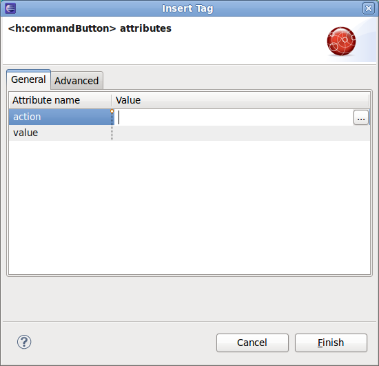

Palette
JSP functions
Now it's possible to import JSP functions (not only tags) into JBoss Tools Palette.

'Insert Tag' wizard
Wizard 'Insert Tag' opened on drop from Palette now shows most used attributes on a special tab to seporate them from all the available attributes.
